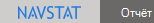
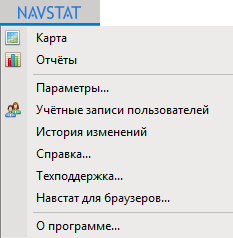

from sikuli import * # -*- coding: utf-8 -*- import os myPath = os.environ.get("GIT_HOME") + u"sikuli-tests" if not myPath in sys.path: sys.path.append(myPath) # Импорт ------------------------------ import authorizationInNavstat import baseFunction import keyer # ------------------------------------- # Проверяет сам факт того что Навстат запустился def simple_test1(): baseFunction.clearData() keyer.editKeyAndService("404C2A00-B173-4844-BA59-9A6F296479E7", "http://services.navstat.infokinetika.net") baseFunction.firstStartNavstat() click(Pattern().similar(0.90)) wait(1) try: find() print(u"Меню на месте") except: print(u"Меню сломали") exit() #----------------------- click() try: find() print (u"Таб с картой через меню открывается") except: print (u"Таб с картой через меню НЕ открывается!") exit() #----------------------- click(Pattern().similar(0.80).targetOffset(78,1)) try: find() print (u"Таб с картой через плюсик открывается") except: print (u"Таб с картой через плюсик НЕ открывается!") # type(Key.F4, KeyModifier.ALT) #simple_test1()